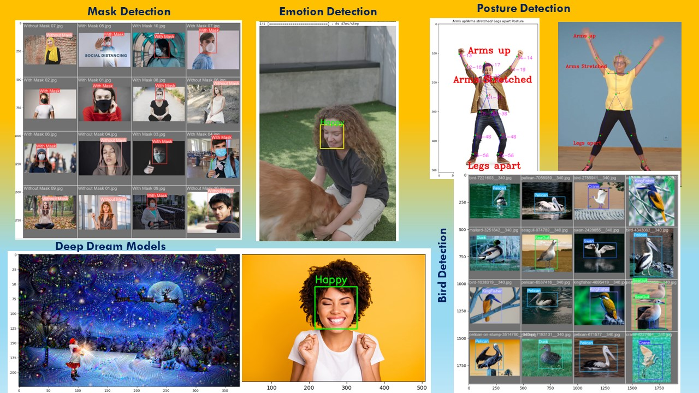
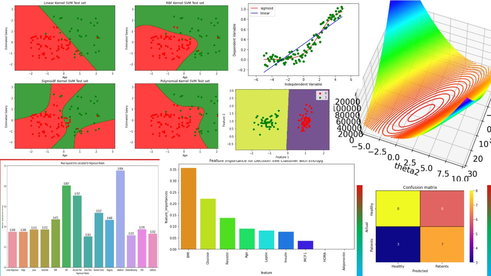
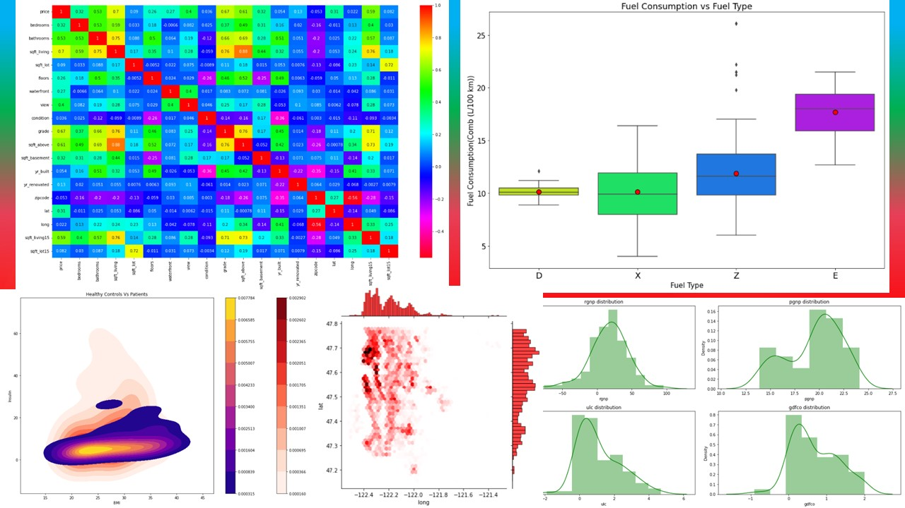
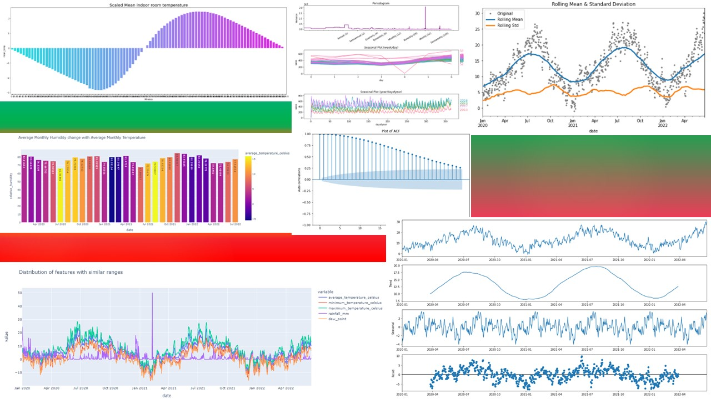
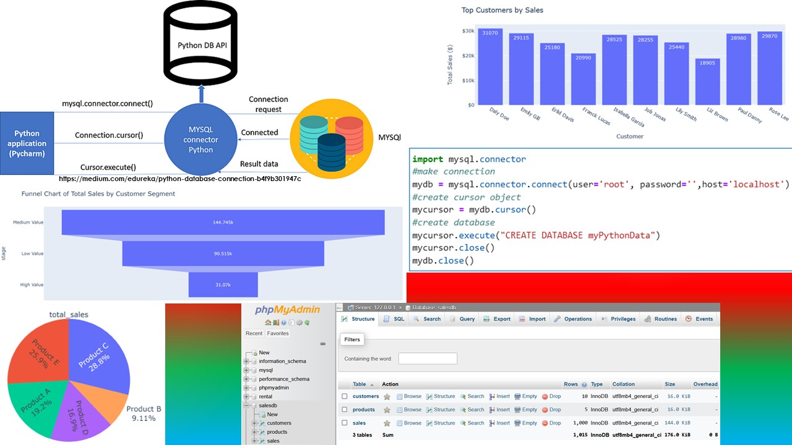
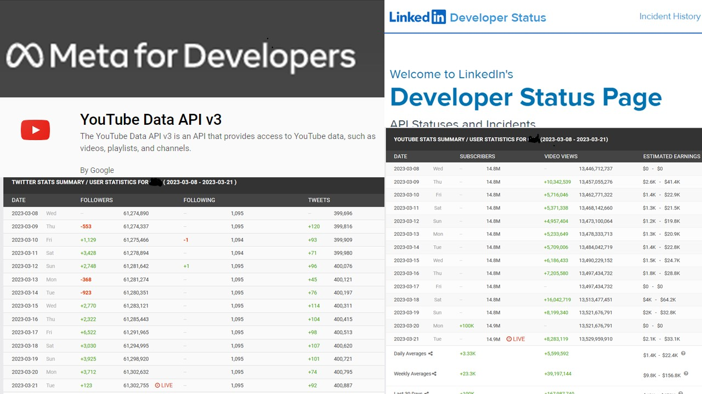

March 21, 2023
Projects related to artificial intelligence, machine learnine, sql, etc. are bundled into various GitHub repositories.
Some of these repositories are:
SQL-in-Python,
Machine-Learning,
Social-Media-Analytics,
Deep-Learning,
Data-Analysis-Basics,
Recurrent-Neural-Network,
Time-Series,
Artificial-Neural-Network,
Convolutional-Neural-Network,
Machine-Learning-in-R
 Image by Gerd Altmann from Pixabay
Active since December 6, 2022
Image by Gerd Altmann from Pixabay
Active since December 6, 2022
Deep Neural Networks
&
Computer Vision Projects

Computer Vision for Image preprocessing, Object Detection, Classification, Recognition,
Segmentation & Counting of objects in images & videos using algorithms like YOLO, Custom CNN,
and various other pretrained models using Deep Neural Networks & OpenCV. Some of the Natural Language processing,
Sentimental Analysis, Time Series Analysis projects are also included.
Active since February 17, 2022

Projects to develop custom data models and algorithms to apply to data sets.
Data Analysis projects done using ML models like Linear Regression, Logistic Regression,
Decision Trees, K-NN, Radius Tree, Extra Tree, Random Forest, Support vector machines,
Naive Bayes, GradientBoosting, XGboost, CatBoost, K-Means Clustering, K-Medoid Clustering,
Hierarchical clustering. These Machine Learning models are evaluated using right evaluation metrics.
Predictive modeling is then applied in various domain settings
Active since April 16, 2020

Web scraping, Data Wrangling, Data preprocessing techniques,
Statistics and Exploratory Data Analysis using various visualization
libraries are well studied in the projects listed here.
Active since June 26, 2022

Various Time series forecasting models for predicting future values based on historical data
employing Recurrent Neural Network (RNN) and statsmodels are listed in this repository.
Active since March 20, 2023

Data Analysis & Visualization projects using datasets generated by MySQL database management system connectivity in python
Active since March 19, 2023

Data mining & analyzing social media account data